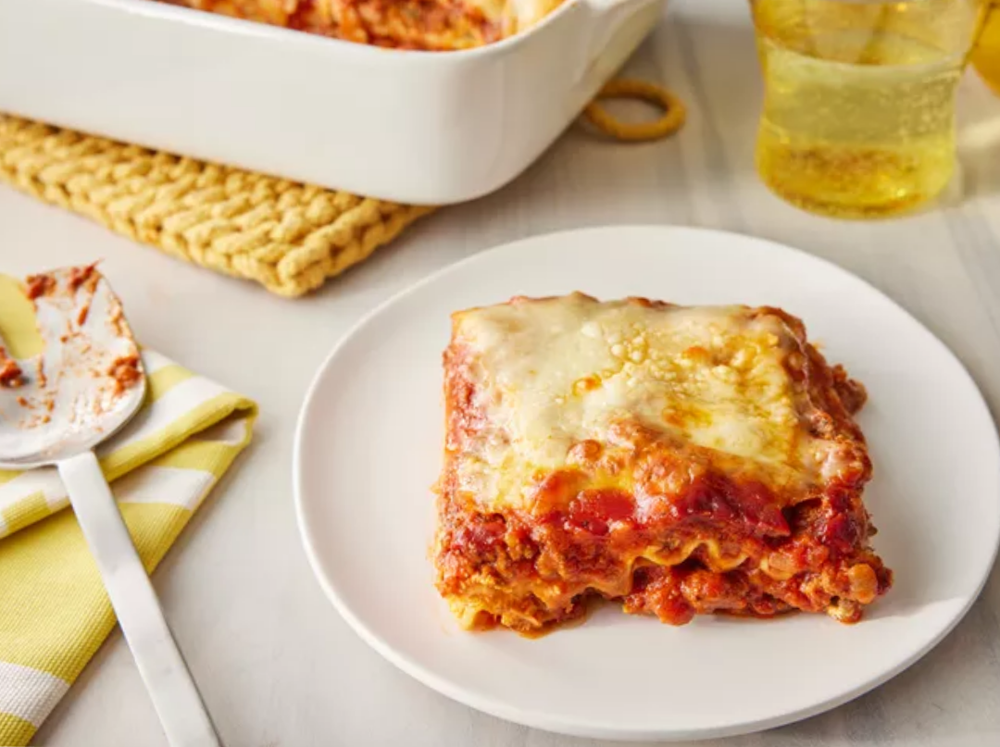

Lasagna

Discover the Art of Lasagna Recipes
Lasagna is more than just layers of pasta—it's a comforting, hearty dish that brings people together.
Whether you're craving a classic meat lasagna, a rich and creamy white sauce variation, or a
vegetarian twist loaded with fresh vegetables, there’s a recipe to suit every taste. Each layer,
from the sauce to the cheese, builds a story of flavor and tradition that turns an ordinary meal
into something memorable. With a little preparation and the right ingredients, you can create your
own lasagna masterpiece that rivals any Italian kitchen.
Homemade Lasagna Made Easy
Making lasagna at home doesn’t have to be complicated.
By following a simple recipe, you can enjoy the delicious comfort of homemade lasagna
any night of the week. Start by preparing a rich meat or vegetable sauce, boil your lasagna
noodles (or use oven-ready sheets), layer generously with ricotta, mozzarella, and
Parmesan, and finish with a golden, bubbling top. It’s a perfect dish for family dinners, meal
prepping, or special gatherings that call for a satisfying, crowd-pleasing meal.
Basic Lasagna Ingredients:
- Lasagna noodles (regular or oven-ready)
- Ground beef or Italian sausage (optional for meat versions)
- Ricotta cheese
- Mozzarella cheese, shredded
- Parmesan cheese, grated
- Onion, chopped
- Garlic, minced
- Crushed tomatoes or marinara sauce
- Tomato paste
- Olive oil
- Salt and pepper
- Italian seasoning (basil, oregano, thyme)
- Fresh parsley or basil (for garnish)
Steps
- Olive oil – for sautéing your aromatics and meat
- Onion, chopped – sautéed for flavor base
- Garlic, minced – added after onions for depth of flavor
- Ground beef or Italian sausage (if using) – browned for the meat sauce
- Tomato paste – stirred in for thickness and richness
- Crushed tomatoes or marinara sauce – to create the base of your sauce
- Salt and pepper – to season the sauce
- Italian seasoning (basil, oregano, thyme) – to add herby flavor
- Lasagna noodles (regular or oven-ready) – boiled if needed, then layered
- Ricotta cheese – spread on noodles for creamy texture
- Mozzarella cheese, shredded – layered for melty goodness
- Parmesan cheese, grated – added for sharp, salty flavor on top
- Fresh parsley or basil (for garnish) – sprinkled on before serving for color and freshness
Home